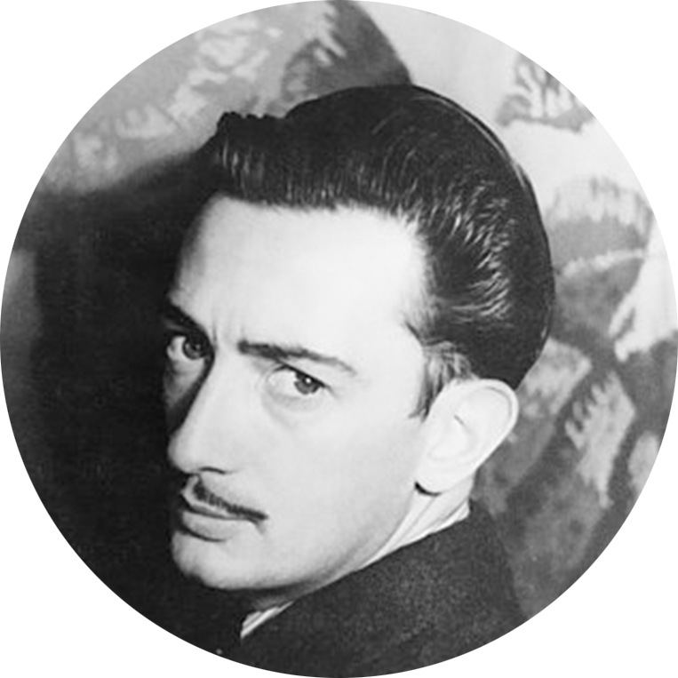

Salvador Dalí
11 May 1904 – 23 January 1989
Artist
He was a Spanish surrealist artist renowned for his technical skill, precise draftsmanship, and the striking and bizarre images in his work.

Salvador Domingo Felipe Jacinto Dalí i Domènech, Marquess of Dalí of Púbol (11 May 1904 – 23
January 1989), known as Salvador Dalí.
List of his works:
- 1910–14 - Landscape Near Figueras
- 1910–14 - Vilabertran
- 1922 - Cabaret Scene
- 1922 - Night Walking Dreams
- 1926 - The Basket of Bread
- 1927 - Composition with Three Figures (Neo-Cubist Academy)
- 1927 - Honey is Sweeter than Blood
- 1929 - The Lugubrious Game
- 1936 - Lobster Telephone
- 1949 - The Madonna of Port Lligat
- 1946 - The Temptation of St. Anthony
- 1958 - The Discovery of America by Christopher Columbus
- etc.
Read more about Salvador Dalí on Wiki.